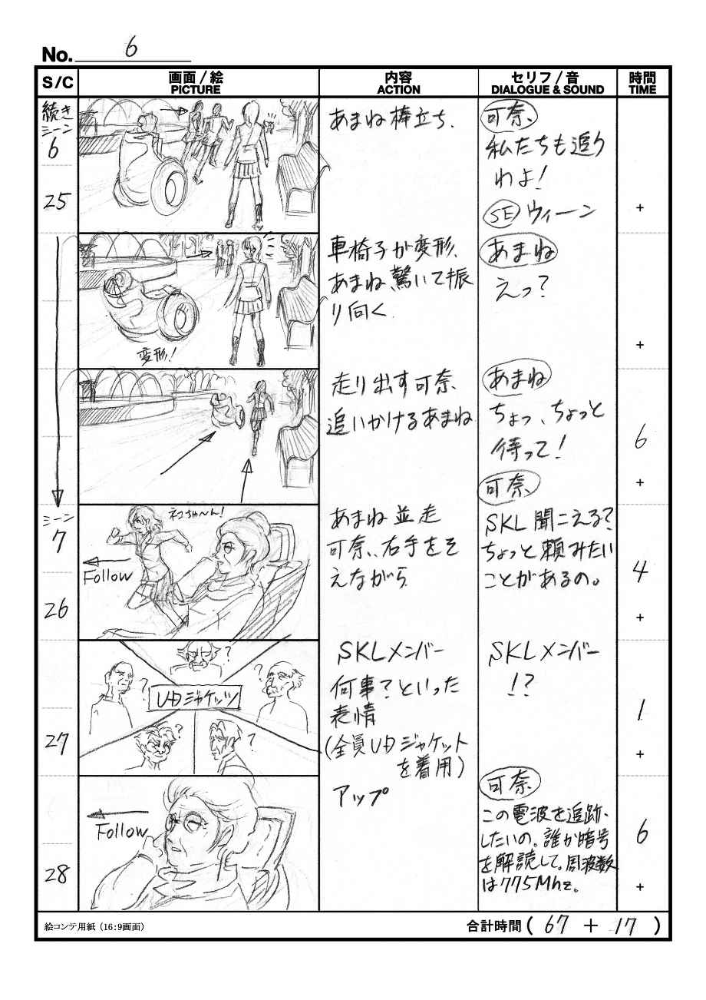
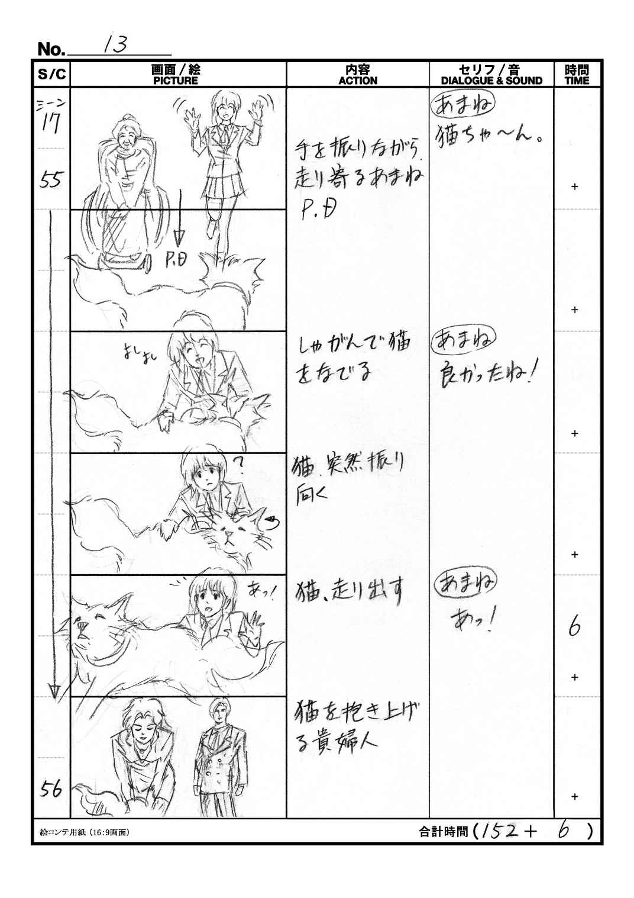

| Making of USUAL DAY | |
| 内山和也 | |
| (2018) | |
表紙イラスト／賀寸哉
表紙デザイン／ＺＡＫＲＥ
「ＵＤ」-Usual Day-。本作品は、ある非営利団体のプロモーションムービーとして、２０１２年に企画・制作され、２０１３年５月に公開された短編アニメーション作品です。
本書では、この「Usual day」について、原作者の立場から作品を解説したいと思います。まず、私はアニメーション制作のプロではなく、工業デザインを本職とする会社員に過ぎません。正直なところ、まさかアニメ制作に関わることになろうとは夢にも思いませんでした。もちろん、まったくの素人です。必要に迫られ、企画を立ち上げ、脚本・絵コンテ・演出を担当しました。
まさに経験もコネもない状態での船出でした。当然ですが、初めての試みですので企画を通すのは想像以上に難航しました。しかし、メンバーの協力を得て、なんとか企画を通すことができました。ところが、制作に入る段階で再び壁に当たります。一般的なアニメ制作会社の制作費は想像以上に高過ぎ、断念せざるを得ませんでした。考えた末に、藁にもすがる思いでいくつかのアニメーション専門学校へ相談しましたが、なかなか良い返事はもらえませんでした。いよいよ万策尽きたと思われたとき、ご協力して頂けるとの返事がありました。それが代々木アニメーション学院様です。本当にありがとうございました。
決めてはこちらの本気度だったそうです。２週間もの間、毎日帰宅後、深夜までかけてなんとか絵コンテを仕上げた甲斐がありました。その素人の悪戦苦闘ぶりに共感して頂けたのだと思っています。最後に、本ムービーは代々木アニメーション学院の多くの講師の方々、学生の皆さん、最後まで付き合ってくれたメンバー３名、そして、友人達の協力なしには完成しませんでした。心より感謝いたします。
尚、本書は個人の所有する著作物に限り、あくまで著作者の責任のもとで公開するものです。読みものとしてお楽しみ頂けると幸いです。
組織の理事会へ提案するための企画書です。少々硬い文章が続きますが、ある意味、この企画書からすべてが始まりました。記録の意味合いも含め、一部改変した上で掲載することとします。
ここまで10 年に及ぶ活動の中で、社会人を中心としたプロジェクト やワーキングでの活動を主に推進してまいりました。社会的啓蒙活動を筆頭に学生や外国人との交流を通じ、より広く世間に対してユニヴァーサルデザインの啓蒙と実践を行ない、認知されてきた実績があります。
今回の企画ではそれらのメッセージと、活動に関するアピールをさらに広げ、ひいてはこれまであまり接点が持てなかった世代、分野の方々へと裾野を広げることを目標としています。具体的には、経産省が策定した産業政策「クールジャパン」に代表されように、世界的に評価が高く、表現の可能性に長けたアニメーションの手法を採用します。また、重要なプラットフォームとして、インターネットを基盤としたＳＮＳやウェブでの展開を行なうことで、シームレスで且つ、ボーダーレスなコミュニケーションの両面に対して、トライアルを行ないます。この企画を実現する為には理事会のご理解と、各プロジェクト皆様のご協力が欠かせません。ぜひ、本企画の真意を汲み取って頂き、ご賛同頂けることを切にお願い致します。
■作品テーマ： シームレス・ソサエティ
障がい者、健常者が分け隔てなく、自然に寄り添える社会。そこには同情ではなく、お互いの個性を尊重し、共感を主軸とした人間関係が形成されている。誰もが安全で安心に、しかも楽しく生活できる社会とはどういうものか、高度にユニヴァーサルデザイン（以下、ＵＤ）が具現化した近未来の姿を映像で訴求します。
また、ＵＤのプロモーションだからといって教則的な内容にはせず、登場人物や人々の営みが活き活きと魅力ある社会を表現し、観た人たちの間で自然と会話が弾むような、アクティブな近未来の生活風景を描きます。
具体的には、提案者が所属するプロジェクトが全面的にプロデュース、ＵＤ監修、劇中アイテムのデザインなどで制作をバックアップします。映像制作はＹアニメーション学院様がご協力に名乗りを上げられ、全工程で協業していきます。また、ＵＤの啓蒙も兼ねて、学生の方々との交流も計画しています。代々木アニメーション学院様は世界でも随一のクリエィター養成校であり、在校生はもちろん、卒業生は国内外で広く活躍されています。今後、各プロジェクットとも、様々な面で協力関係を築いて行けると確信しています。
■作品概要
高校生と老人のふれあいを通じて、生活におけるＵＤを、何気ない日常風景から宮崎駿監督作品のようなライブ感あふれる映像で描く。近未来では、電動車椅子と歩行者同士が双方向通信で位置を把握しているため、安全に共存している。高度にＵＤ化された住宅、街並み。超高齢化社会における様々な老人の障がいを支援するツール（音声認識、脳波コントロールシステムなど）を通じて、社会的弱者が生き生きと活動している様を描く。
近未来（２０３０年頃を想定）の都内某所。劇中では二子玉川をモデルにしています。
・橘あまね： 17 歳の高校２年生。ボランティア実習の最中に騒動に巻き込まれる。
・二階堂可奈： 82 歳のハイテク老人。ネット上では年齢不詳のブロガー「るるりら」。
・永宮英輔： 歩行障がいの青年。特技は暗号解読。「るるりら」のブログフォロワー。
・ＳＫＬ： 「諸葛孔明ラブ」、諸葛孔明の兵法を研究している５人の老人グループ。
・猫： イギリス大使の飼い猫。同国の機密事項を首輪に隠している。
都内に住む高校生の橘(たちばな)あまねは、課外授業のボランティア実習で、同じ町にある老人ホームを訪れる。そこでホーム住人の二階堂可奈に出会う。車椅子を押しながら街中を散策する二人。そこに一匹の猫が現れる。同時に怪しい黒服の二人の男が現れ、なぜか猫を捕獲しようとする。とっさに猫を逃がす二人。それを追いかける男たち。猫を救うため行動を起こす可奈。変形する車椅子、速度を上げて走り出す。走って追いかけるあまね。同時に、可奈はヘッドセットから老人ホームの仲間「ＳＫＬ」に召集をかける。一方、歩行障がいの青年、永宮英輔は可奈のブログの電波解読依頼から猫の発信機の暗号を解読。妨害電波を発信し、老人たちを援護する。黒服の男たちは翻弄され、猫を完全に見失う。一方、猫を保護するために奔走する老人たち。ＳＫＬの見事な陣形作戦が功を奏し、可奈たちは、無事、猫の保護に成功する。そこに見知らぬ高級車が近づく。中からは外国の貴婦人と紳士が現れる。猫が彼らに駆け寄る。抱き上げる貴婦人。その猫の首輪にＭＩ-５の刻印が光る。彼らはイギリス大使館の者とだけ伝え、礼を述べて立ち去る。あまねは「ＳＫＬ」が諸葛孔明ラブの頭文字と知って笑う。
シーン１： 町の風景、タイトルイン「ＵＤ」-Usual Day-
シーン２： あまねの自宅
隅々までＵＤが配慮されている住宅を描く。階段、バリアフリーの床、ＴＶには常時字幕が流れている。家族がテーブルを囲い朝食を取っている。
あまね： 「今日ね、課外授業でボランティアやるんだ」
母： 「しっかりやってきなさい。遅刻しちゃだめよ」
あまね： 「は〜い」
シーン３： 玄関先
あまね： 「行ってきまーす！」
元気よく家を出るあまね。
シーン４： 老人ホーム
建物全景、エントランス、ホール、ＵＤプラスが見事に具現化されている。
あまね： （元気良く）「橘あまねです。今日は宜しくお願いします！」
元気よくおじぎ。
可奈： 「二階堂可奈よ。よろしくね」
あまね： （元気よく）「はいっ！」
笑顔でうなずく。
シーン５： 街（高度にＵＤ化された街並み）
あまねが車椅子を押している。楽しげに談笑している二人。電子白杖で不自由なく歩いている視覚障がい者とすれ違う。
可奈： 「このメガネ型ＡＩのお陰で、視覚、聴覚、色覚などの様々な障がいの手助けが出来るようになったのよ」
あまね： 「人にやさしい技術ですね」
そこに突如、猫が現れる。
あまね： 「あっ、かわいい猫！」
思わず猫をなでに行くあまね。
可奈： 「どこの猫かしら......!? 」
猫の発信機に気付く可奈。あまねがなでていると、そこに黒服の二人の男が現れる。一歩近づく男。
あまね： 「------だれっ？」
猫： 「フーッ！」
思わず猫をかばうあまね。
可奈： 「早くお逃げ！」
あまねも後押し。猫逃走。追う男たち。可奈のアイモニター越しの猫、電波の周波数が表示されている。
可奈： 「私たちも追うわよ！」
車椅子が高速モードに変形して走り出す。
あまね： 「えっ、ちょっと待って！」
あわててあまねも追いかける。
シーン６： 電動車椅子で移動中の可奈、あまね併走
可奈： 「ＳＫＬ、聞こえる？ ちょっと頼みたいことがあるの」
画面割りの爺さんたち： 「!? 」（全員ＵＤジャケットを着ている）
可奈： 「（音声認識）この電波を追跡したいの。誰か暗号を解読して。周波数は７７５Ｍｈｚ」
シーン７： 歩道を歩いている英輔（歩行アシストを装着している）
ブログ更新のアラームに気付く。
英輔： 「？」 アイモニターに映る「るるりら」のブログページ。
（この電波を追跡したいの。誰か暗号を解読して。周波数は７７５Ｍｈｚ）
英輔： （頭を掻きながら）「うーん、やってみるか......」
シーン８： 猫を追跡中の可奈とあまね
あまね： （息を切らせながら）「可奈さんっ！」
可奈： 「猫ちゃんを助けるのよ」
あまね： 「はいっ！」
真顔になるあまね。可奈の車椅子が近づく前にアラームがなり、慣れた様子で道をあける通行人たち。
シーン９： 英輔
暗号解読のため忙しくパソコンを操作する英輔。アイモニターにはプログラム表示が激しく流れる。
英輔： 「分かったぞ。ハッシュだ」
急いでブログに書き込む英輔。
シーン10 ： 可奈とあまね
ブログ書き込みのアラーム。画面に英輔の書き込み。
（るるりらさん、こんにちは。エースＫです。暗号解読できました！ ハッシュ関数ＭＤ５で同期してください）
可奈： 「（音声認識）暗号解除。ハッシュ関数ＭＤ５で同期。（あまねの方を見ながら）これで猫ちゃんの居場所が分かるわ。ＳＫＬ聞いてる？ マルタイは猫。この位置情報をもとに保護して！」
画面割りの爺さんたち、笑顔でサムアップ。
あまね： 「可奈さんすごい！」
シーン11 ： 黒服の男たち
サングラス型のアイモニターで猫を追跡している。
シーン12 ： 可奈とあまね
可奈のアイモニターには老人たちを先行する追跡者の２つの光。
可奈： 「------まずいわね。（音声認識）エースＫさん、だめもとでお願い！ 電波を撹乱できない？」
シーン13 ： 英輔
英輔： （一瞬、画面をにらんで）「撹乱しろってか」
再びキーを打ち始める。
シーン14 ： 黒服の男たち
走っていたが、おもむろに止まる。
男： 「......」
サングラス型のモニターには無数のポイント表示とアラーム。
シーン15 ： 可奈とあまね
可奈のアイモニターには猫と老人たちたちの現在位置が表示されている。
可奈： 「ＳＫＬ、鶴(かくよく)の陣で包囲！」
画面割りの爺さんたち、笑顔でサムアップ。爺さんたちが包囲網を形成しつつある状況がリアルタイムで表示されている。
ＳＫＬ： （音声のみ）「可奈さん、朱雀(すざく)の方角２７０。マルタイ包囲。繰り返す......」
可奈： 「行くまで待機！」
可奈、あまねに目配せ。うなずくあまね。
シーン16 （ラスト）： 老人たちに包囲されている猫。
猫： 「フーッ！」
爺さんたちもにらんでいる。そこに可奈とあまねが到着し、猫に駆け寄る。
あまね： 「猫ちゃん、良かったね」
猫の頭をなでるあまね。爺さん達は笑顔でうなずいている。突如、振り向くと走り出す猫。
あまね： 「あっ！」
そこにブロンドの貴婦人と英国風の紳士。夫人が猫を抱き上げる。夫人に甘えている猫のアップ。首輪には「ＭＩ-５」の刻印が光る。
紳士： （英語）「私たちは英国大使館のものです。大切な家族を助けて頂き、感謝いたします」
日本語の同時通訳音声。立ち去る二人（ドアと車の音だけ）。
そこに英輔登場。
可奈： （英輔を見るなり）「あなたがエースＫさんね？」
英輔： （信じられないといった表情で）「って、ばあちゃんがるるりら!? 」
あまね： （可奈を覗き込みながら）「ところで可奈さん、ＳＫＬって何ですか？」
可奈： 「諸葛孔明ラブの頭文字よ」
爺さんたち、笑顔でサムアップ。
あまね： 「ふふっ、それって女子高生みたい」
嬉しそうに笑うあまね。
可奈： 「私も、元・女子高生よ」
可奈ウインク。少女の面影がオーバーラップ。
エンドテロップ。
---ＥＮＤ---
脚本をもとに作成した絵コンテです。何分にも初めて描いたものですので、稚拙な部分も多く、その上、手書きのため読みにくいところもあるかと思います。おおらかな気持ちでご覧頂けると助かります。また、本編ではいくつか変更、追加になった箇所があります。絵コンテからどう変わったのかをひも解くのも面白いかと思います。全編15 ページになります。参考までに、簡単な「絵コンテ用語解説」を以下に記載しました。
絵コンテ （えコンテ、英: storyboard）とは、映画、アニメ、テレビドラマ、ＣＭ、ミュージックビデオなどの映像作品の撮影前に用意されるイラストによる表であり、映像の設計図と言えるものである。「コンテ」は、continuity(連続性)の略である。
(ウィキペディアより)
・ＰＡＮ(パン)： カメラの位置を固定したまま画面を上下左右(または斜め)に振ること。上下に振る場合はＰ•Ｕ(パンアップ)やＰ•Ｄ(パンダウン)と指示する事もある。
・FOLLOW(フォロー)： カメラが移動しながら、被写体をいつも視野の中に収めて、その動きを追うこと。
・Ｔ•Ｕ(トラックアップ)： カメラが前に移動しながら被写体を撮影すること。ただのズームアップに使う場合が多い。
・Ｔ•Ｂ(トラックバック)： カメラが後ろ移動しながら被写体を撮影すること。ただのズームアウトに使う場合が多い。
・in(イン)： 被写体が画面の中に入りこんでくること。
・out(アウト)： 被写体が画面の外に出て行くこと。
・BANK(バンク)： 前に使ったカットを再び使うこと。
・正面ＵＰ： 人物の正面のアップ。
・アオリ： ふりあおいでとらえること。
・フカン： 見おろしてとらえること。
・Ｆ•Ｉ(フェードイン)： 画面が段々明るくなる効果。
・Ｆ•Ｏ(フェードアウト)： 画面が段々暗くなる効果。
・Ｏ•Ｌ(オーバーラップ)： 画面と画面を重ね合わせる効果。カットのつなぎに使うことが多い。
・ＳＥ(サウンドエフェクト)： 効果音。劇中で使われる様々な音響効果のこと。
・同ポジ： 同一ポジションの略。同じポジションから同じ画角で撮影された映像のこと。
・ＢＡＮＫ： 同じ映像やカットを使い回す際のその映像やカットのこと。手塚治虫氏が命名し、鉄腕アトムで制作コスト削減のために採用した。
（主に株式会社ガイナックスホームページ内、絵コンテ用語解説、及び一部ネットより引用）


ストーリーは、よくありがちな説明の多い退屈なものにしたくありませんでした。あえてエンターテイメント性の高い作品に仕上げることを目標にしたのです。それは、これから社会の中核になっていく若者たちに、ＵＤに興味を持ってもらいたいという思いからでした。とにかく、解説ビデオなどにありがちな説明臭い作品と思われたくなかったのです。結果はともあれ、「意外と面白いぞ」と感じて頂ける作品にしたいという思いからストーリーの方向性を決めました。
加えて、元気なお年寄りを描きたいという思いが強くありました。「確かに、体は不自由になったけど、自由な心は変わらない」というお年寄りが、社会としっかり関わっている様子を描きたかったのです。
あらすじを書いた時点でほぼストーリーはできていましたので、脚本はそれほど苦労しませんでした。基本的にあらすじに台詞を付け足したという感じです。もちろん、短編作品の上、シンプルなストーリー構成というのもあり、ほぼ一晩で書き上げました。
ただ、エンターテイメント性が強すぎ、プロモーションムービーにはそぐわないという意見が出て難航することとなります。結局、最後の最後まで、「どの程度エンターテイメント性を持たせるか？」という問題がつきまといました。
脚本だけでは作品のイメージや世界観が伝わりにくいと考え、稚拙ながらキャラクターの原案を描きました。恥を覚悟の上、企画会議で披露しましたが、不安に反して好意的に受け取られてほっとしたのを覚えています。今となっては、これもプロジェクト推進に一役買ったと思っています。やはり、具体的な人物像があるとストーリーにより現実味が出てくるのは間違いありません。このことが、奇しくも絵コンテ作成へつながることとなりました。次のページがその原案です。
当初は脚本だけで、絵コンテはプロに任せようと考えていました。ところが、脚本だけではよく分からないとの指摘を受け、急遽、絵コンテを作成することとなります。自分としてはキャラクター原案を含め、ある程度イメージもあるのでなんとかなるだろうと安易に考えていました。しかし、後でその考えがいかに甘かったか身にしみることとなります。
まず、絵コンテを描くのは初めてでしたので、どうやって描いたらいいのか分かりませんでした。お手本を探すべく書店に足を運び、宮崎駿監督と細田守監督の絵コンテ集を購入しました。同時にネットからも情報を集め、まずは１週間ほどかけて絵コンテの描き方を勉強しました。それこそ毎日、絵コンテを片手に実際の作品を、繰り返し何度も鑑賞しました。特に細田守監督の「サマーウォーズ」は毎日１回、合計10 回以上は観たと思います。
さて、いざ描き始めたのは良かったのですが、当初は、３日間かけてもたったの２ページしか進みませんでした。このままでは１週間後の理事会に間に合いません。時間ばかりが過ぎていく状況にかなり焦りました。本当にこのアングルでいいのか、表情、演技は適切かなど、細かいことに悩みだすときりがありませんでした。
結局のところ、悩んだところで今の自分の実力以上のものは出せないと開き直りました。そうしたら肩の力が抜けスムーズに描けるようになりました。その後、徐々にペースは上がり、後半の８ページは、土日のほぼ２日間で描きあげました。今見ても線に勢いがあり、ストーリーのテンポのよさにつながったと思います。ただ、娘に見せたところ、「絵が古い」と言われましたが、そもそも人間が古いので仕方ありません。
以前、宮崎吾朗監督のアニメ映画「コクリコ坂から」のＮＨＫの特集番組が放送されました。その中で監督が自身の演出について、「登場人物を作為的に動かすのではなく、彼ら、彼女らが勝手に動くのを、ただそこに寄り添ってその様子を描き留めるだけ」と語っていました。当時はそういうものかと、まったく他人事のように聞いていましたが、実際にやってみてその意味が少しだけ理解できました。
期せずして世の監督たちの苦悩をうかがい知ることとなり、貴重な体験となりました。描き方の勉強から実際の作成まで、作業は連日、会社から帰宅後、深夜にかけておよそ２週間かけて完成させました。大げさかもしれませんが、生みの苦しみを存分に味わいました。以下に、絵コンテを描き上げた直後のメールをそのまま掲載します。睡眠不足でほとんどハイ（灰？）な状態でしたが、紛れもない本音が綴られています。
表題： 絵コンテ完成のお知らせ
関係者のみなさん
お世話になります。内山です。かなりバテています。
土日、自主的に缶詰になって、絵コンテを仕上げました。素人にしてはよくやったと自分では思っています。深夜ではありましたが、一人祝杯を上げました。
７、８割できてからが長かったです。ここがひとつの折り返しですね。とにかく、明日の理事会には何とか間に合いました。明日は、しっかりとプレゼンしてきます。正直なところ、あまりにも稚拙でお見せ出来るレベルではありませんが、ここまでの成果として15 日にみなさんにもお披露目します。一応、描き上げはしましたが、素人の限界を思い知らされたのも事実です。
ただ、キャラクターたちが、それぞれ一つの人格を持ち、生き生きと動いている様子が想像できたのは良かったです。私の中では、彼らはもはや虚構の存在ではありません。血の通った、肌の暖かい、触れようと思えば触れられるぐらい一人の人間として存在しています。彼らの動きもすべてイメージできます。表情、しぐさ、息遣い、声の調子......。この一週間は、可能な限りの時間を彼らと向き合いました。それは何物にも換えがたい経験となりました。（引用終わり）
恥ずかしいことに、いかにも素人にありがちなミスをしています。絵コンテのシーン６のカット22 では、あまねと可奈は正面向きです。ところが、振り向いたシーンもないのにカット25 ではあまねと可奈は後ろ向きになっています。この演出ではキャラクターの位置が逆になっていると誤解されかねません。カットのつなぎが悪く、イマジナリーライン※越えとも取れるミスです。残念ながら指摘されるまで全く気付きませんでした。このミスに気付いたアニメーターが直してくれました。大変助かりました。
※イマジナリ---ライン(想定線)： 映画やビデオを撮影する場合の用語で、二人の対話者の間を結ぶ仮想の線、あるいは人物、車両等の進行方向に延ばした仮想の線をいう。(ウィキペディアより)
これは全面的に代々木アニメーション学院の皆様にお任せしました。素人がしゃしゃり出ても現場を混乱させるだけと考えたからです。スタッフの方々は、ご自身のお仕事の合間に作業しながら、クオリティーの高い作品に仕上げてくれました。まさにプロの底力を存分に発揮してくれました。編集ラッシュ（途中の試写）を観た時には本当に感無量でした。
いろいろ無茶なお願いもしましたので、大変なご苦労があったと思います。しかし、学生の皆様にいい刺激になったと言って頂けたので本当に救われました。その後、教材としても活用して頂いているとのことで、少しはお役に立てたのではと思います。
ここで、本作品の絵コンテ以降のアニメーション制作の流れを簡単に説明します。まずは登場人物やアイテムなどのデザインを行いました。いわゆるキャラクターデザイン、各種設定と言われるものです。
キャラクターは代々木アニメーション学院講師の方が魅力的な登場人物をデザインしてくれました。また、アイテムデザインは企画側のメンバーで手分けしてデザインしたものです。次に、登場人物の衣服などの色彩計画です。今回は特にＵＤの観点から、色弱の方にも出来る限りの配慮を行いたいと思い、色弱模擬フィルタを用いた配色の確認、画像加工ソフトによる色覚シミュレーションを活用しながら、画面の配色作業を行いました。キャラクターの服装配色も、色弱の方でも見分け易いように計画されています。
背景にも同様にＵＤの観点から色彩計画を実施しつつ、キーとなる背景を平行して作成し、全体の世界観を構築します。
次に、絵コンテのアングルをより詳細に描き起こすレイアウト（画面設計）を行います。そして、実際にキャラクターに動きや演技をつける原画、動画の作画作業が始まります。今回の動画枚数は４５００枚に及びました。
動画が仕上がってくると、それらをスキャニングして色を付ける、キャラクター着色を行います。次に、仕上がってきた動画と背景を合成するコンポジット作業です。そして、出来上がったカットをつなぐ映像編集に入ります。ここまで来ると、やっと映像として全体像が見えてきます。
ある程度、映像編集が終わると、いよいよ音付けです。アフターレコーディング、通常アフレコと呼ばれる声優による台詞の録音を行います。今回、人生で初めて立ち会いましたが、とても緊張感のある作業でした。まさにキャラクターに命を吹き込む行為そのものです。
次は、台詞やストーリーとのバランスを考慮しつつＢＧＭを重ねます。今回、筆者の友人がオリジナル楽曲を提供してくれました。忙しい合間をぬって自ら作曲、演奏して制作したものです。作品にも合っており大変気に入っています。
後は時間の許す限り尺の調整やつなぎの最適化などの編集作業を続け、最後にフォーマット編集を行い、完成です。完成直後、スタッフの方々と遅い夕食をとったのが昨日のことのように思い出されます。
聴力に障がいのある方にも楽しんで頂けるように、本作品は、全編に固定字幕を挿入しています。専門組織の監修のもと、画面をあえてシネスコサイズとし、画面下部に十分な字幕スペースを確保しました。また、画面下部を黒地の字幕エリアとして固定し、安定的な読み易さを工夫しています。ある意味、プロモーションムービーとして一番分かり易いところかと思います。当然、台詞だけでなく、可能な限り、音楽やサウンドエフェクトなども表記しました。
劇中でイギリス大使館の公用車が登場するため、その車両をデザインしました。イメージは２０３０年代のロールスロイスの電気自動車です。実は、作品で登場するのはサイドビューだけですので、フロントやリアのデザインは不要でした。今考えますと、無駄に時間をかけてしまった印象ですが、作品にかける思いの表れだったと納得しています。次ページがその車両のスケッチです。
終盤で英国紳士が登場するシーン（カット56 、本編３分10 秒）の背景の車を修正させてもらいました。会社で仕事の合間に３日間かけて直したのですが、登場したのはわずか１秒ほど。しかも英国紳士と婦人で隠れているという状況です。アニメーション背景の悲哀を感じましたが、背景の質が作品の説得力に影響を与えるのも事実です。仮に１秒であっても手は抜けません。
映画「００７」でジェームズ・ボンドが所属している諜報機関の名称が「ＭＩ-６」（軍情報部第６課、秘密情報部）というのは有名です。同じイギリスというのもあり、劇中に「ＭＩ-５」という架空の組織を登場させました。本人は架空のつもりでしたが、後で実際に存在していると知り驚きました。余談ですが、「ＭＩ-６」は国外での諜報活動を専門としており、「ＭＩ-５（軍情報部５課、内務省保安局）」はイギリス国内で諜報活動を行っている組織とのことです。なんと「ＭＩ-５ 英国機密諜報部」というＴＶシリーズ（２００２年から２０１１年までＢＢＣで放送、全86 話）もあります。もっとよく調べるべきでしたが、ご存知の方には面白い含みになったかもしれません。
最後までお読み頂きありがとうございます。
確かに演出上、拙い部分は否めません。そこは率直に認めます。しかし、多くの制約の中で、精一杯努力した結果ですので悔いはありません。それは手を抜いた訳ではなく、ベストをつくした結果ですから受け止めるしかありません。
私がお伝えしたかったのは苦労話や美談などではなく、制作にかけた「思い」ただそれだけです。ここは嘘偽りのない本音です。はっきり申しまして、ほとんどがボランティア精神に支えられて完成した作品と言ってもよく、ここだけは切にご理解頂きたいと思います。つまり、潤沢な資金があり、素人がノリだけで作った作品では決してないということです。
正直なところ、何度、諦めかけたかしれません。しかし、無償で参加してくれた有志の方々に「諦めます」とはとても言えません。ご協力頂いている時点で、「止める」という選択肢は私にはありませんでした。
公開から３年ほど経った頃、ようやく客観的に観られるようになりました。その頃から徐々に備忘録もかねて本書の編纂を始めました。また、出版までには紆余曲折もあり、さらに２年以上も費やしてしまいました。
最後に、手弁当で参加してくれた皆様に対し、この本がせめてものお礼となれば嬉しい限りです。本作品に参加して頂いた皆様に心よりお礼申し上げます。
本当にありがとうございました。
巻末に制作当時の全スタッフリストを掲載したかったのですが、個人情報保護の観点から断念しました。ご理解いただきますようお願い致します。
ここまでお読みいただいた方のみに、本作のリンク先をお知らせします。
■本作品のリンク先
１９６７年、群馬生まれ。大学卒業まで東京で過ごす。現在は某自動車会社に勤めるカーデザイナー。これまで多くの車両・ショーカー開発に携わる。プライベートでは、武道家(ジークンドーインストラクター)としてカルチャースクールで講師を勤めるなど、武道の普及に努めている。
２０１６年より電子書籍を出版し、作家としても活動を開始。趣味はイラスト制作(pixiv, Twitter等で発表)、ドラム演奏(バンド活動)など。
タイトル： Making of UD -Usual Day-
著者： 内山和也
２０１８年８月公開
2018 Kazuya Uchiyama All Rights Reserved.
本書は縦書きでレイアウトしています。ご覧になる機種により表示差が生じることがあります。
本書のコピー、スキャン、デジタル化の無断複製は、著作権法上での例外である私的利用を除き禁じられています。本書を代行業者等の第三者に依頼してコピー、スキャンやデジタル化することは、たとえ個人や家庭内での利用であっても一切認められていません。尚、本作品はノンフィクションですが、本書内に登場する人物、団体等の名称は実際のものとは関係ありません。
＊ 本書は（株）ボイジャーのRomancerで作成されました。